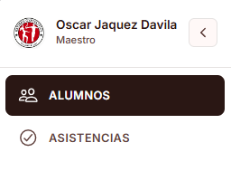
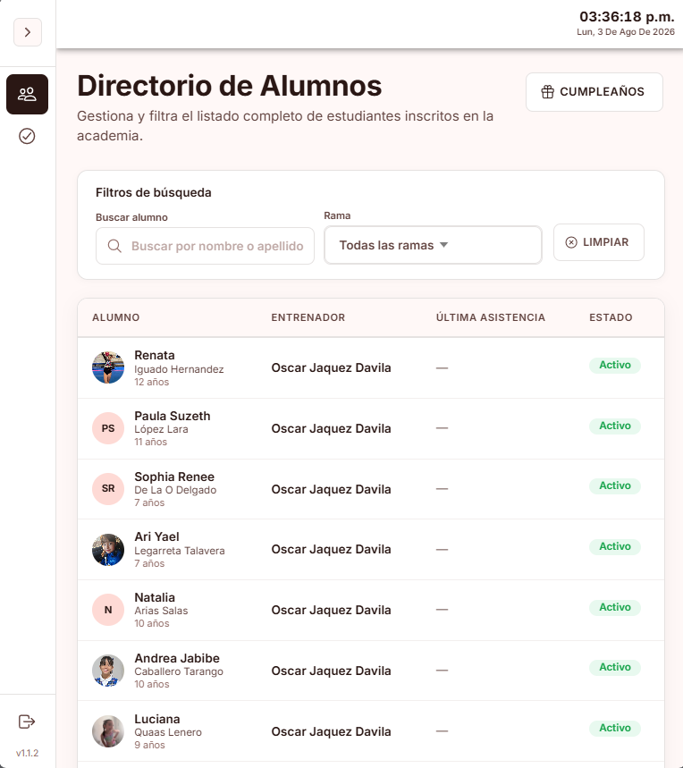
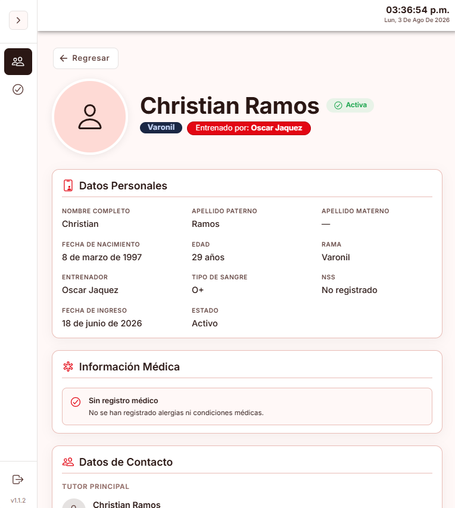
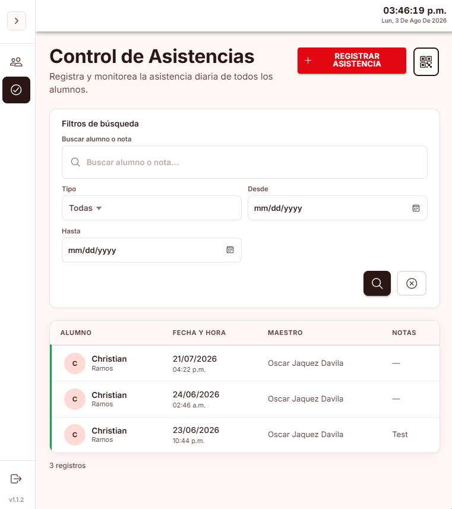

GymControl
Guía de Usuario — Panel del Maestro

| Elemento | Descripción |
|---|---|
| Sidebar | Menú lateral con las secciones disponibles: Alumnos y Asistencias |
| Reloj | Muestra la hora y fecha actual en la barra superior |
| Cerrar Sesión | Botón en la parte inferior del sidebar para salir |
Al iniciar sesión, verá la lista de alumnos asignados a usted.

| Filtro | Descripción |
|---|---|
| Buscar | Buscar por nombre o apellido del alumno |
| Rama | Filtrar por Varonil o Femenil |
| Columna | Descripción |
|---|---|
| Alumno | Foto (o iniciales), nombre completo y edad |
| Entrenador | Su nombre (como maestro asignado) |
| Última Asistencia | Fecha de la última vez que asistió |
| Estado | Activo o Inactivo |
Haga clic en una fila para ver el perfil del alumno.

El perfil muestra la información completa del alumno:
La forma más rápida de registrar asistencia.
Si el código QR no está disponible, puede registrar la asistencia manualmente.

| Filtro | Descripción |
|---|---|
| Buscar | Buscar por nombre del alumno o nota |
| Tipo | Todas, Asistencia o Falta |
| Desde / Hasta | Rango de fechas |
| Columna | Descripción |
|---|---|
| Alumno | Nombre del alumno (borde rojo si es falta) |
| Fecha y Hora | Fecha y hora del registro |
| Maestro | Su nombre |
| Notas | Notas adicionales y alerta de impago si aplica |
| Funcionalidad | ¿Puede hacerlo? |
|---|---|
| Ver sus alumnos asignados | ✅ Sí |
| Ver perfil de alumno | ✅ Sí |
| Registrar asistencia (QR) | ✅ Sí |
| Registrar asistencia (manual) | ✅ Sí |
| Ver historial de asistencias | ✅ Sí |
| Enviar QR por email | ✅ Sí |
| Ver cumpleaños | ✅ Sí |
| Crear o editar alumnos | ❌ No |
| Gestionar membresías | ❌ No |
| Gestionar maestros | ❌ No |
| Gestionar usuarios | ❌ No |
| Ver dashboard / reportes | ❌ No |
| Ver auditoría | ❌ No |
| Problema | Causa probable | Solución |
|---|---|---|
| No puede escanear QR | Cámara no autorizada | Permita el acceso a la cámara en la configuración del navegador |
| Alumno bloqueado al escanear | Sin membresía activa | Verifique que el alumno tenga membresía vigente (consulte al admin) |
| Cobro extra inesperado | Día fuera del plan o límite semanal | Verifique los días incluidos en la membresía del alumno |
| No ve alumnos | No tiene alumnos asignados | Contacte al administrador para que le asigne alumnos |